1

خطر أشغال مؤقتة
خطر أشغال مؤقتة
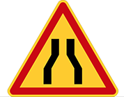
خطر مؤقت لطريق ضيِّقة
من الجهتين
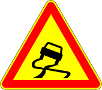
خطر مؤقت قارعة يقع بها
انزلاق
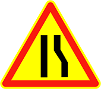
خطر مؤقت لطريق ضيِّقة من
اليمين
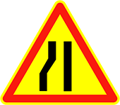
خطر مؤقت لطريق ضيِّقة من
اليسار
خطر مؤقت لطريق بها حَدبة
أو حَدْبات
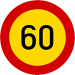
تحديد السرعة في 60 كلم في الساعة مؤقت
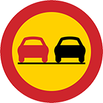
ممنوع التجاوز مؤقت
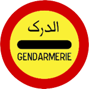
وقوف عند حاجز الدرك مؤقت
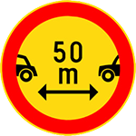
ممنوع على المركبات السير دون ترك مسافة دنيا فاصلة تساوي العدد المشار إليه مؤقت
أخطار أخرى مؤقتة
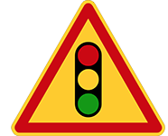
إعلان مؤقت عن إشارات ضوئية
لتنظيم السير
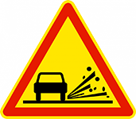
خطر مؤقت لتطاير الحصى
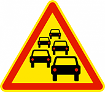
خطر مؤقت لوجود ازدحام
شديد
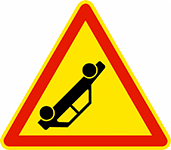
خطر مؤقت لوجود حادثة
على الطّريق
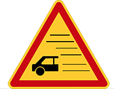
خطر مؤقت لوجود ضباب
أو دخان كثيف
عمود متحرك ينظم حركة
السّير
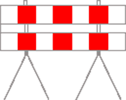
حاجز
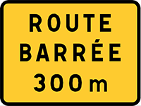
إعلان عن طريق منحرف
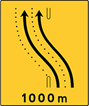
طريق منحرف على بعد 1000 متر
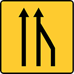
علامة تعلن عن نقص في عدد المسالك
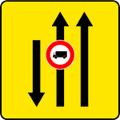
لوحة تخصيص المسالك
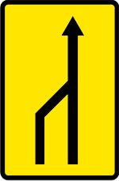
علامة تعلن عن نقص في عدد المسالك
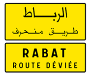
علامة لتأكيد الانحراف